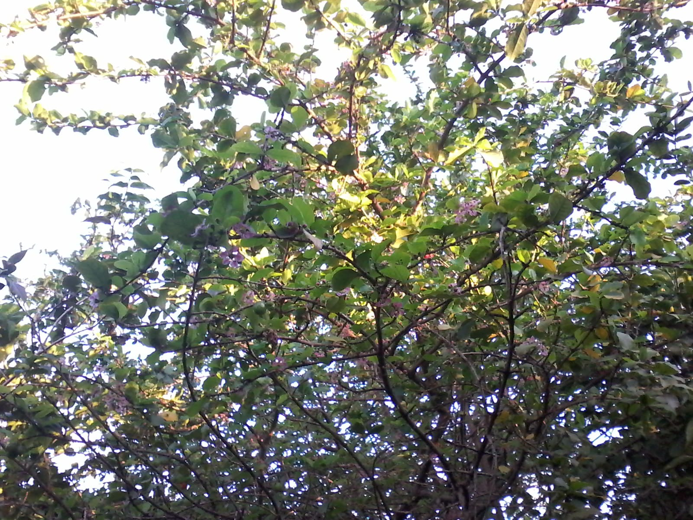
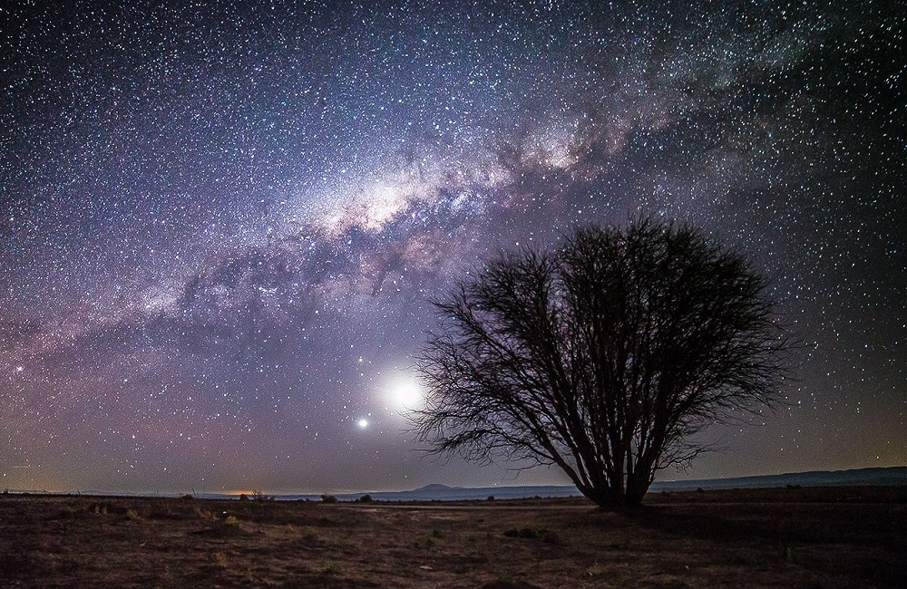
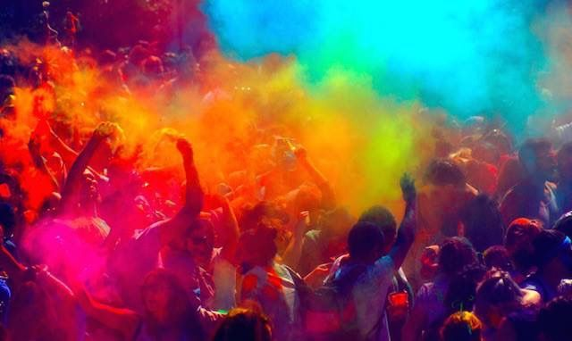
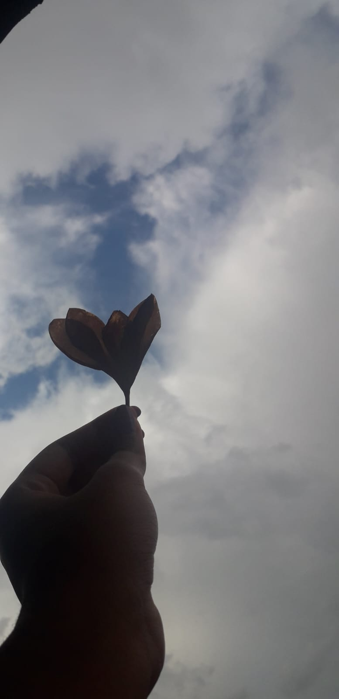
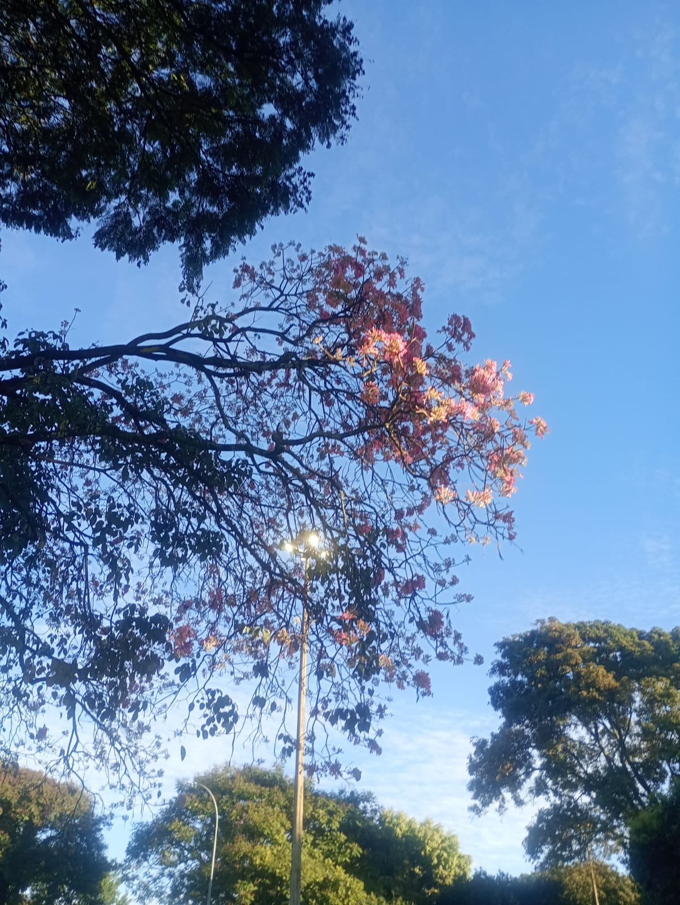
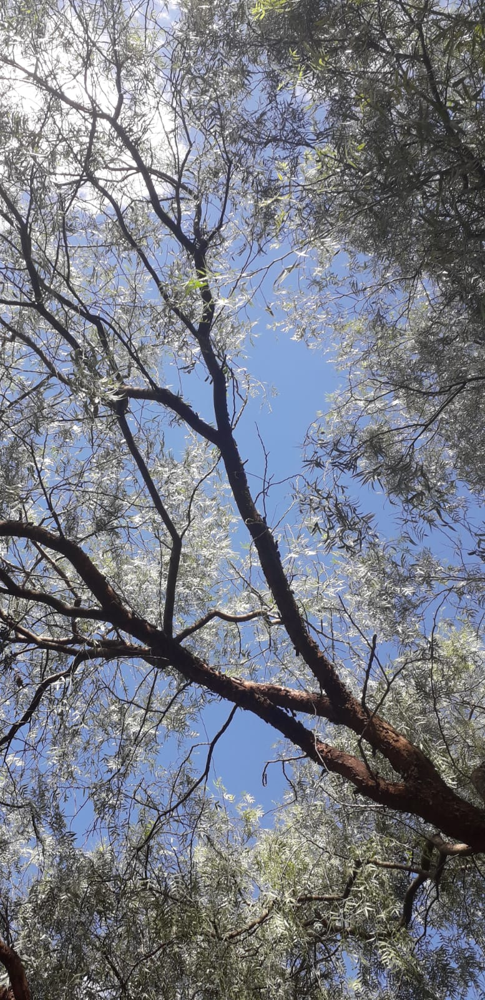

<!DOCTYPE html>
<html lang="en">
<head>
  <meta charset="UTF-8">
  <meta name="viewport" content="width=device-width, initial-scale=1.0">
  <title>Photos</title>
</head>
<body>
  <link href="https://cdn.jsdelivr.net/npm/bootstrap@5.0.2/dist/css/bootstrap.min.css" rel="stylesheet" integrity="sha384-EVSTQN3/azprG1Anm3QDgpJLIm9Nao0Yz1ztcQTwFspd3yD65VohhpuuCOmLASjC" crossorigin="anonymous">
  <link rel="stylesheet" href="https://cdnjs.cloudflare.com/ajax/libs/font-awesome/6.5.1/css/all.min.css">
  <link rel="stylesheet" href="css/style.css" type="text/css">
</body>
</html>
    <nav class="navbar navbar-expand-lg" style="background-color: #000000;" >
        <div class="container-fluid">
          <a class="navbar-brand  text-white" href="index.html"><i class="fa-solid fa-camera-retro"></i>
            Photos</a>
          <button class="navbar-toggler" type="button" data-bs-toggle="collapse" data-bs-target="#navbarSupportedContent" aria-controls="navbarSupportedContent" aria-expanded="false" aria-label="Toggle navigation">
            <span class="navbar-toggler-icon"></span>
          </button>
          <div class="collapse navbar-collapse" id="navbarSupportedContent">
            <ul class="navbar-nav me-auto mb-2 mb-lg-0">
              <li class="nav-item">
                <a class="nav-link"   href="#historia">História da Fotografia</a>
              </li>  
              <li class="nav-item">
                <a class="nav-link" href="#tipos">Tipos de Fotografia</a>
              </li>                       
              <li class="nav-item">
                <a class="nav-link" href="#poemas">Poemas</a>
              </li>                       
              <li class="nav-item">
                <a class="nav-link" href="#gallery">Galeria</a>
              </li>
              <li class="nav-item">
                <a class="nav-link" href="#linha-tempo">Linha do Tempo</a>
              </li>                                                                                                                                                                                                                                                                                                                                                                                                                                                                                                                                                                                                                                                                                                                                                                                                                                                                                                                                                                                                                                                                                                                                                                                                                                   
            </ul>
            <button class="btn btn-outline-light" id="themeToggle" 
            aria-label="Ativar modo escuro">
              <i id="themeIcon" class="fa-solid fa-sun"></i>
            </button>
          </div>
        </div>
      </nav>
      <div class="container">
        <div class="row my-5">
            <div class="col-lg-12">
                <div id="carouselExampleAutoplaying" class="carousel slide" data-bs-ride="carousel"  data-bs-interval="3000">
                    <div class="carousel-inner">
                      <div class="carousel-item active">
                        
                      </div>
                      <div class="carousel-item">
                        
                      </div>
                    </div>
                    <button class="carousel-control-prev" type="button" data-bs-target="#carouselExampleAutoplaying" data-bs-slide="prev">
                      <span class="carousel-control-prev-icon" aria-hidden="true"></span>
                      <span class="visually-hidden">Previous</span>
                    </button>
                    <button class="carousel-control-next" type="button" data-bs-target="#carouselExampleAutoplaying" data-bs-slide="next">
                      <span class="carousel-control-next-icon" aria-hidden="true"></span>
                      <span class="visually-hidden">Next</span>
                    </button>
                  </div>
            </div>
        </div>
        
        <div class="row my-4" id="historia">
            <div class="col-lg-8">
                <h1 class="text-black">História da Fotografia</h1>
                <p class="mb-2">Fotografia é a técnica e a arte de criar imagens duradouras pela captura
                   da luz em uma superfície fotossensível ou em um sensor eletrônico. O termo vem do 
                   grego photos (luz) e graphein (gravar ou escrever), significando literalmente "gravar 
                   com luz".
                </p>
                <p class="mb-2">A história da fotografia começou muito antes da criação das câmeras 
                  modernas. Um dos primeiros princípios utilizados foi a câmera escura, conhecida desde 
                  a Antiguidade, que permitia projetar imagens do ambiente por meio de um pequeno 
                  orifício em um espaço fechado. Porém, foi somente no século XIX que surgiram as
                  primeiras experiências capazes de registrar imagens permanentemente. Em 1826 ou 1827,
                  o francês Joseph Nicéphore Niépce produziu a fotografia permanente mais antiga 
                  conhecida, utilizando uma placa revestida com uma substância sensível à luz.
                </p>
                <p class="mb-2">Em 1839, o francês Louis Daguerre apresentou ao mundo o daguerreótipo, 
                  um dos primeiros processos fotográficos divulgados publicamente. Essa técnica utilizava 
                  placas de metal para produzir imagens detalhadas, mas não permitia fazer várias cópias da
                   mesma fotografia. Com o passar dos anos, novas técnicas foram desenvolvidas, tornando a 
                   fotografia mais acessível e facilitando a produção de imagens em maior quantidade. 
                   No século XIX, a fotografia começou a ser utilizada para registrar pessoas, acontecimentos 
                   históricos, paisagens e momentos importantes da sociedade.
                </p>
                <p class="mb-2">Com o avanço da tecnologia, a fotografia passou por grandes
                   transformações. No século XX, as câmeras ficaram menores, mais práticas e 
                   populares, principalmente com a chegada dos filmes coloridos. Já no final do 
                   século XX, a fotografia digital revolucionou a maneira de registrar imagens,
                   eliminando a necessidade de filmes fotográficos. Atualmente, com os celulares e
                   as câmeras digitais, qualquer pessoa pode fotografar, editar e compartilhar imagens
                   pela internet. Assim, a fotografia tornou-se uma ferramenta importante para a 
                   comunicação, a arte, a educação, o jornalismo e a preservação da história.
                </p>
            </div>

            <div class="col-lg-4" id="tipos">
               <h5 >Tipos de Fotografia</h5>
                <div class="accordion" id="accordionExample">
                    <div class="accordion-item">
                      <h2 class="accordion-header">
                        <button class="accordion-button" type="button" data-bs-toggle="collapse" data-bs-target="#collapseOne" aria-expanded="true" aria-controls="collapseOne">
                             Fotografia de retrato
                        </button>
                      </h2>
                      <div id="collapseOne" class="accordion-collapse collapse show" data-bs-parent="#accordionExample">
                        <div class="accordion-body">
                         É um tipo de fotografia que tem como principal objetivo registrar pessoas, destacando seus rostos, expressões e características. Pode ser feita em estúdios ou em ambientes externos e é muito utilizada em fotos profissionais, familiares e artísticas.
                      </div>
                    </div>
                  </div>
                    <div class="accordion-item">
                      <h2 class="accordion-header">
                        <button class="accordion-button collapsed" type="button" data-bs-toggle="collapse" data-bs-target="#collapseTwo" aria-expanded="false" aria-controls="collapseTwo">
                           Fotografia de paisagem
                        </button>
                      </h2>
                      <div id="collapseTwo" class="accordion-collapse collapse" data-bs-parent="#accordionExample">
                        <div class="accordion-body">
                          Tem como objetivo registrar elementos da natureza e ambientes, como montanhas, praias, florestas, rios e cidades. Esse tipo de fotografia busca destacar a beleza dos lugares, utilizando elementos como iluminação, cores e enquadramento.
                        </div>
                      </div>
                    </div>
                    <div class="accordion-item">
                      <h2 class="accordion-header">
                        <button class="accordion-button collapsed" type="button" data-bs-toggle="collapse" data-bs-target="#collapseThree" aria-expanded="false" aria-controls="collapseThree">
                            Fotografia documental
                        </button>
                      </h2>
                      <div id="collapseThree" class="accordion-collapse collapse" data-bs-parent="#accordionExample">
                        <div class="accordion-body">
                         É utilizada para registrar acontecimentos reais, situações sociais, culturas e momentos históricos. Seu objetivo é informar e contar histórias por meio de imagens, sendo bastante utilizada no jornalismo e em registros históricos.
                        </div>
                      </div>
                    </div>
                  </div>
            </div>
        </div>
    </div>

    <div class="contains-inline" id="poemas">
      <h4>Poemas</h4>
      <div class="card-group">
        <div class="card">
           
             <div class="card-body" >
              <h4 class="card-title">Estrelas</h4>
              <p class="card-text"> As estrelas são contos sem fim ;<br>
               Viram reis caírem , impérios ressurgirem ,<br> 
               Viram a humanidade vir ,irão vê-la partir.<br>
               Estavam no começo , estarão no fim.<br> 
               As estrelas estavam, estão e sempre estarão aqui.<br> </p>
             <p class="card-text"><small class="fg-2"> 17 Agosto de 2021</small></p>
            </div>
          </div>
         <div class="card">
            
             <div class="card-body">
               <h4 class="card-title">A Vida</h4>
                 <p class="card-text">A vida é um simples compasso<br>
                 De um coração batendo acelerado.<br>
                 A gente cresce , A gente morre , A gente muda<br>
                 Como lagarta que vira borboleta ,<br>
                 A famosa metamorfose .<br>
                 Um simples suspira,<br>
                 A vida é constante, que vive a mudar.<br>
                 </p>
                 <p class="card-text"><small class="fg-2"> 6 de Janeiro de 2022</small></p>
               </div>
           </div>
          <div class="card">
            
             <div class="card-body">
                <h4 class="card-title">Música</h4>
                 <p class="card-text">Se escuta a batida no ar, <br>
                 É meu coração vibrando para cantar. <br>
                 Se  escuta uma nota no ar , <br>
                 É minha liberdade tentando voar. <br>
                 Se escuta uma música no ar , <br>
                 É o céu tentando dançar <br>
                 É a vida tentando se mostrar. <br>
                <p class="card-text"><small class="fg-2"> 15 de Novembro de 2024</small></p>
             </div>
          </div>
        </div>
      </div>
      <section id="gallery">
        <h2>Galeria  </h2>
          
           
           
          
          
          
      </section>
       <title>Linha do Tempo</title>
       <style>
      .timeline {
       position: relative;
       max-width: 600px;
       margin: 40px auto;
       padding-left: 30px;
       border-left: 3px solid #a810ee ;
    }

       .evento {
       position: relative;
       margin-bottom: 24px;
       padding: 16px;
       background: #f8fafc;
       border-radius: 8px;
    }

      .evento::before {
       content: "";
       position: absolute;
       left: -39px;
       top: 20px;
       width: 14px;
       height: 14px;
       background: #a810ee ;
       border-radius: 50%;
    }

     .data {
       font-weight: bold;
       color: #a810ee ;
       margin-bottom: 6px;
       display: block;
    }
  </style>
      <div class="timeline" id="linha-tempo">
           <h4>Linha do Tempo</h4>
        <div class="evento">
         <span class="data">2014</span>
        <p>Primeiro Desenho.</p>
      </div>
     <div class="evento">
        <span class="data">2017</span>
          <p>Primeira Fotografia.</p>
      </div>
      <div class="evento">
        <span class="data">2018</span>
         <p>Primeiro Poema.</p>
      </div>
      <div class="evento">
         <span class="data">2020</span>
          <p>Primeira Pintura.</p>
      </div>
    </div>

      <div class="container text-center">
        <div class="row">
       <div class="col align-self-start">
         Você Pode
       </div>
       <div class="col align-self-center">
         Fazer Tudo 
        </div>
       <div class="col align-self-end">
         Que Quiser Fazer 
        </div>
       <div class="col align-self-end">
         Basta Começar
        </div>
       <div class="col align-self-end">
         Assinado: <strong>Emanuely Vitoria</strong>
         </div>
      </div>
    </div>

    <script src="https://cdn.jsdelivr.net/npm/bootstrap@5.0.2/dist/js/bootstrap.bundle.min.js"></script>
    <script src="script.js  " type="text/Javascript" ></script>
    
</body>
</html>

